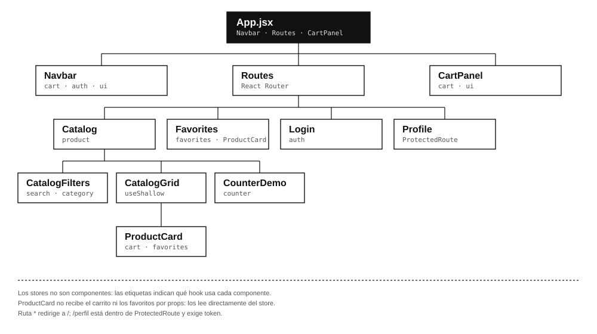

Respuestas y documentación de la guía de aprendizaje
| Programa | Tecnólogo en Análisis y Desarrollo de Software (ADSO) |
| Competencia | 220501096 · Desarrollar la solución de software |
| RAP | RAP3 · Crear componentes frontend |
| Actividad | Codificar los módulos de la interfaz de usuario |
| Stack | React 19 · Vite · Zustand 5 · React Router |
| Entrega | Aplicación Tienda SENA + repositorio + README + este documento |
Este documento reúne las respuestas de las actividades 3.1, 3.2, 3.3.13 y 3.4 de la guía Zustand en React con Vite, y documenta la aplicación de práctica Tienda SENA. La aplicación incluye catálogo asíncrono, carrito, favoritos, tema claro/oscuro, filtros, contador, persistencia, Redux DevTools y una ruta protegida.
| Elemento | Descripción |
|---|---|
| Duración | 24 horas: 12 directas con el instructor y 12 de trabajo autónomo. |
| Modalidad | Presencial, con trabajo autónomo en grupo. |
| Requisitos previos | Componentes, props, useState, useEffect, React Router, consumo de API con fetch o Axios, Git/GitHub. |
| Resultados de aprendizaje | Codificar módulos con un framework del lado del cliente y aplicar buenas prácticas de organización del código y manejo del estado. |
Situación: “El mensaje que pasa de mano en mano”.
1. ¿Qué tiene en común la situación del edificio con la forma en que pasamos props entre componentes de React?
En el edificio, la administradora entrega el mensaje al vigilante, el vigilante al residente del segundo piso
y así hasta el quinto. Ningún intermediario necesita el contenido, pero todos deben recibirlo y pasarlo.
En React ocurre lo mismo cuando el carrito vive en App y el botón “Agregar al carrito” está en
ProductCard: la acción sube por ProductList y CatalogPage, y el contador
baja por App y Navbar. Los componentes intermedios no usan el carrito, pero tienen
que declarar props y reenviarlas.
Eso es prop drilling: el dato viaja por una cadena de componentes que solo actúan como mensajeros. La consecuencia es un acoplamiento artificial: si cambia el nombre o la forma de una prop, hay que tocar varios niveles; si un intermediario se reutiliza en otra pantalla, arrastra props que no le corresponden. El mensaje no es el problema; el problema es la cadena.
2. ¿Qué pasaría en el edificio si se agregan más pisos o si un intermediario olvida pasar el mensaje? ¿Qué equivale a eso en una aplicación React?
Con más pisos hay más intermediarios, más tiempo y más puntos donde el mensaje se puede perder, cambiar o
llegar tarde. Si alguien olvida pasarlo, el residente del quinto nunca se entera y la administradora cree que
ya hizo su parte. En React, agregar un componente envolvente obliga a atravesarlo con props; si se olvida una,
el componente profundo recibe undefined y aparece una acción que no actualiza nada, un contador que
no cambia o un error en tiempo de ejecución.
El equivalente también incluye el costo de mantenimiento: cada nuevo nivel hay que declararlo y documentarlo, y cada refactor obliga a revisar toda la cadena. Además, cuando el dato cambia, los intermediarios se vuelven a renderizar aunque no lo usen. En una aplicación grande esto produce inconsistencias entre ramas —el carrito del navbar dice una cosa y el panel otra— y hace más difícil probar cada pieza por separado.
3. ¿Qué solución propondría para el edificio? ¿Cómo se traduciría esa solución en una aplicación?
En el edificio instalaría un canal directo: un citófono, una cartelera en la recepción o un buzón central. La administradora deposita el mensaje una sola vez y el residente lo consulta cuando lo necesita; los intermediarios dejan de ser mensajeros. En React, ese “buzón central” es un store global: un lugar fuera del árbol de componentes donde vive el estado y donde cualquiera puede leer o escribir sin pasar por el padre inmediato.
Con Zustand, el carrito se crea una vez con create y queda disponible como un hook.
ProductCard llama a addItem(product); Navbar lee
selectTotalItems; CartPanel lee los items y ejecuta updateQty. Ninguno recibe
props del carrito y ninguno necesita un Provider que envuelva la aplicación.
La solución no es “meter todo en un store”: el citófono sirve para mensajes compartidos, no para la conversación
privada de cada apartamento. En React, useState sigue siendo la herramienta correcta para lo que solo
le interesa a un componente.
4. En el proyecto de su grupo, ¿qué información necesitan conocer varias pantallas o componentes al mismo tiempo? Escriba al menos tres ejemplos.
En Tienda SENA —y en un proyecto ADSO típico— se repiten estos datos:
CatalogFilters y la lista en CatalogGrid; son ramas distintas que deben compartir el mismo criterio.App para aplicarlo al body.loading, error y los productos los consultan la lista, los filtros y el estado vacío.1. ¿Qué es el estado (state) de un componente en React y para qué sirve useState?
El estado es la información que cambia con el tiempo y que afecta lo que el componente muestra. Es una “foto”
propia de cada instancia del componente: el texto de un input, el modal abierto, la pestaña activa o un contador.
useState es el hook que declara esa memoria local y devuelve dos cosas: el valor actual y una función
para actualizarlo.
Cuando se llama al setter, React programa un nuevo render con el nuevo valor. El estado se conserva entre renders,
pero se reinicia si el componente se desmonta. No se debe modificar directamente (count = count + 1);
se usa el setter para que React se entere y actualice la interfaz.
2. ¿Cuál es la diferencia entre props y estado?
Las props son entradas que el componente recibe desde afuera, normalmente del padre. Son de solo lectura: el hijo no debe modificarlas y su valor lo controla quien lo renderiza. El estado es memoria interna del componente; él es dueño de ese valor y lo cambia con su setter. Ambos provocan un nuevo render cuando cambian, pero por razones distintas: las props cambian porque el padre se volvió a renderizar; el estado cambia porque el componente (o un evento) llamó al setter.
Si dos componentes necesitan el mismo dato, el estado se puede elevar al ancestro común y pasar por props; si la distancia es grande, se puede usar un store. Las props siguen siendo la forma natural de configurar un componente reutilizable.
3. ¿Qué sucede con un componente cuando su estado cambia?
React agenda un nuevo render de ese componente y, por defecto, de sus descendientes. En el render se calcula una nueva versión del árbol de elementos; luego React compara con la anterior (reconciliación) y actualiza solo las partes del DOM que cambiaron. Después del commit se ejecutan los efectos que dependen de ese valor.
El estado es un snapshot: dentro de un render, el valor no cambia a mitad de camino. Si se hacen varias
actualizaciones seguidas, React puede agruparlas (batching). Un componente hijo solo evita el render si
está memorizado con memo y sus props no cambiaron; de lo contrario, se vuelve a ejecutar aunque su
parte visual no cambie.
4. ¿Ha usado useContext o la Context API? Si es así, describa brevemente para qué.
Sí. La Context API permite compartir un valor con un subárbol sin pasar props nivel por nivel. Se crea con
createContext, se envuelve la aplicación con un Provider y los componentes consumen con
useContext. La he usado para el tema visual, el idioma y la sesión de usuario: datos que cambian poco
y que necesita casi toda la interfaz.
Su límite es que todos los consumidores se vuelven a renderizar cuando cambia el valor del Provider, salvo que se dividan los contextos o se memoricen los consumidores. Para estado que cambia con frecuencia —el carrito, un contador, los filtros— un store con selectores evita renders innecesarios y no obliga a envolver la app. En Tienda SENA no se usa ningún Provider: el tema, la sesión y el carrito viven en stores de Zustand.
5. ¿Qué es localStorage y qué tipo de datos puede guardar?
localStorage es un almacenamiento clave-valor del navegador, síncrono y por origen. Persiste aunque se
cierre la pestaña o el navegador, a diferencia de sessionStorage. Solo guarda cadenas de texto;
para objetos y arreglos se usa JSON.stringify al escribir y JSON.parse al leer. La API básica
es setItem, getItem, removeItem y clear.
Tiene un límite cercano a 5–10 MB según el navegador. Como cualquier script de la página puede leerlo, no es apto
para contraseñas, datos de tarjetas ni tokens reales; para una sesión de producción se prefieren cookies
httpOnly y Secure gestionadas por el backend. En esta práctica se guardan el carrito, los
favoritos y el tema; el token es ficticio y está marcado como demostración.
6. Escriba el comando para crear un proyecto React con Vite.
El comando con npm es:
npm create vite@latest tienda-sena -- --template react cd tienda-sena npm install npm run dev
El doble guion separa las opciones de npm de las de Vite. Después de instalar Zustand, el proyecto queda listo para
crear la carpeta src/store/.
El árbol parte de App y muestra las rutas, los componentes principales y los stores que consume cada uno.
Las etiquetas de store no son componentes: indican qué hook se usa en ese punto.

| Dato o información | Componentes que lo usan | ¿Cómo se comparte hoy? | ¿Debería ser global? | Store / decisión |
|---|---|---|---|---|
| Usuario autenticado | Navbar, Login, Profile, ProtectedRoute | Estado en App + props; o localStorage leído en cada componente | Sí. Lo usan varias páginas y decide el acceso. | useAuthStore · persist de user |
| Token de sesión | ProtectedRoute, Profile | localStorage manual, prop o variable global | Sí, con precaución. Es estado de sesión. | useAuthStore · token demo; en producción cookie httpOnly |
| Carrito (items, cantidades, total) | ProductCard, Navbar, CartPanel | Estado elevado a App y props por CatalogPage / ProductList | Sí. Ramas distintas y cambios frecuentes. | useCartStore · persist + devtools |
| Favoritos | ProductCard, Favorites | Estado local duplicado o props desde App | Sí. Debe verse igual en tarjeta y página. | useFavoritesStore · persist |
| Tema claro / oscuro | Navbar, App, toda la interfaz | useState en App + props al botón | Sí. Afecta el body y debe sobrevivir a la recarga. | useUiStore · persist con partialize |
| Búsqueda por texto | CatalogFilters, CatalogGrid | useState en Catalog + props al input y a la lista | Sí. Input y lista son ramas separadas. | useProductStore · search |
| Categoría seleccionada | CatalogFilters, CatalogGrid | useState + props | Sí. Debe combinarse con la búsqueda. | useProductStore · category |
| Productos, loading y error | Catalog, CatalogGrid | fetch dentro de Catalog y props hacia abajo | Sí. Es un recurso remoto compartido. | useProductStore · acción async |
| Panel del carrito abierto | Navbar, CartPanel | useState en App + prop al navbar y al panel | Sí, pero es UI. No debe persistirse. | useUiStore · isCartOpen sin persist |
| Texto de un input no compartido | Un solo componente | useState local | No. Solo le interesa a ese componente. | useState; ejemplo: visibilidad de contraseña |
useState lo que pertenece a un solo componente.
La práctica se construyó como una aplicación independiente con catálogo, carrito, favoritos y preferencias. Los seis ejercicios de la guía están implementados en el repositorio.
| N.° | Ejercicio | Implementación y evidencia | Concepto practicado |
|---|---|---|---|
| 1 | Tienda SENA con catálogo desde API, carrito con total y persistencia |
Catálogo asíncrono con fetch a /products.json o
VITE_API_URL/products; estados loading y error con reintento.
Carrito con addItem, updateQty, removeItem, totales y
persist en tienda-sena-cart.
|
create, set, get, async, persist |
| 2 | CartPanel.jsx con cantidades, eliminar y vaciar |
Panel lateral con lista, botones + y −, eliminación por producto, vaciado y total.
Incluye un estado vacío. No procesa pagos: es una práctica académica.
|
Acciones y selectores; inmutabilidad con map y filter |
| 3 | useFavoritesStore, corazón en la tarjeta y página /favoritos |
Store con toggleFavorite(product), isFavorite(id) y clearFavorites;
persistencia en tienda-sena-favorites. La página reutiliza ProductCard.
|
Diseño de store propio; React Router; selectores derivados |
| 4 | useUiStore con tema persistido y botón en la Navbar |
Tema light / dark con toggleTheme; persist con
partialize para guardar solo el tema. App aplica data-theme al
body y el navbar muestra el botón.
|
persist, partialize, estado de UI |
| 5 | Filtro por texto y categoría: input en un componente y lista en otro |
search y category viven en useProductStore. CatalogFilters
escribe; CatalogGrid lee con useShallow(selectFilteredProducts). Incluye estado vacío
y limpieza de filtros.
|
Estado compartido entre ramas; selector derivado; useShallow |
| 6 | Conectar el carrito a Redux DevTools |
useCartStore está envuelto en devtools con nombre CartStore; cada acción
usa el tercer argumento de set (cart/addItem, cart/updateQty,
cart/clear). La captura del historial se guarda en docs/redux-devtools.png siguiendo
docs/guia-devtools.md.
|
devtools, depuración, nombres de acciones |
1. ¿Qué diferencia hay entre set({ count: 0 }) y set((state) => ({ count: state.count + 1 }))? ¿Cuándo se usa cada uno?
set({ count: 0 }) entrega un objeto con el valor nuevo y Zustand lo combina con el estado actual; las
demás propiedades se conservan. Sirve para fijar un valor conocido: reiniciar, limpiar o asignar una selección.
set((state) => ...) recibe el estado más reciente y calcula el nuevo valor a partir de él. Se usa
cuando el resultado depende del valor anterior, como incrementar o agregar a una lista.
La forma con función evita valores obsoletos cuando hay varias actualizaciones seguidas o cuando el
setter se ejecuta en un callback asíncrono. En el carrito, addItem usa la función para leer los items
actuales y decidir si incrementa una cantidad o agrega un producto nuevo.
2. ¿Por qué no se debe escribir state.items.push(producto) dentro de una acción?
Porque push modifica el arreglo original y conserva la misma referencia. Zustand compara el estado con
igualdad referencial para decidir si notifica a los suscriptores; si el arreglo es el mismo objeto, puede concluir
que no hubo cambio y no volver a renderizar. Además, se rompe la inmutabilidad: el estado anterior cambia “por
debajo” y los snapshots de DevTools dejan de ser confiables.
La forma correcta es crear un arreglo nuevo: [...state.items, newItem], o transformarlo con
map / filter. En useCartStore, updateQty mapea los items y filtra
los que quedan en cero; removeItem usa filter. Nunca se muta el arreglo existente.
3. Explique por qué const store = useCartStore() puede causar renderizados innecesarios.
Sin selector, el hook se suscribe a todo el store. El componente se vuelve a renderizar cuando cambia
cualquier propiedad: items, pero también error, loading o la identidad de una
acción, aunque la parte visual que usa no haya cambiado. En un store con varias acciones y datos, eso multiplica los
renders y el trabajo de reconciliación.
La solución es suscribirse a lo necesario: useCartStore((s) => s.items),
useCartStore(selectTotalItems). Si se necesitan varios valores en un objeto, se usa
useShallow para comparar superficialmente. En Zustand 5, devolver un objeto nuevo en cada render sin
useShallow puede provocar un ciclo infinito.
4. ¿Para qué sirve useShallow?
useShallow envuelve un selector que devuelve un objeto o un arreglo y compara el resultado con el anterior
usando una comparación superficial: si las claves y sus valores son iguales, conserva la referencia anterior y evita
el render. Es útil para seleccionar varios datos en una sola llamada:
useShallow((s) => ({ items: s.items, addItem: s.addItem })).
Sin él, el selector crea un objeto nuevo en cada ejecución; Zustand ve una referencia distinta y vuelve a renderizar,
incluso si los valores no cambiaron. En Zustand 5 esto puede escalar a un ciclo infinito. En CatalogGrid
se usa con selectFilteredProducts porque el filtro devuelve un arreglo nuevo en cada cálculo.
5. ¿Qué hace el middleware persist y dónde guarda la información por defecto?
persist envuelve el store para guardar una parte de su estado en un almacenamiento y recuperarlo al
iniciar. Por defecto usa localStorage y una clave definida en name. Al crear el store,
hidrata el estado guardado; en cada cambio, serializa lo indicado por partialize. También admite
version y migrate para evolucionar el formato.
En Tienda SENA se usa en carrito, favoritos, tema y sesión demo. No se guarda todo: el panel del carrito, los filtros y los errores deben empezar de cero. Y no se guardan contraseñas ni información sensible.
6. Mencione dos datos de una aplicación que deberían ser estado local y dos que deberían ser estado global.
Locales (useState):
Globales (Zustand):
La frontera no es “grande vs. pequeño”, sino “compartido vs. privado”. En Tienda SENA, el tema y los filtros también son globales porque cruzan ramas; el ojo de la contraseña y el menú móvil son locales.
La transferencia se documenta sobre Tienda SENA, la aplicación funcional de esta guía. Los requisitos se cumplen en el código y en el repositorio; la revisión del Pull Request depende del grupo.
| N.° | Requisito | Evidencia | Estado |
|---|---|---|---|
| 1 | Instalar Zustand y crear src/store/ |
Dependencia zustand@5 en package.json; carpeta con seis stores nombrados como hooks. |
Cumplido |
| 2 | Mínimo dos stores; uno de autenticación completo | useAuthStore con user, token, loading, error, login, logout e isAuthenticated. Además: product, cart, favorites, ui y counter. |
Cumplido |
| 3 | Acción asíncrona que consuma el backend con loading y error | useProductStore.fetchProducts consulta /products.json o {VITE_API_URL}/products; loading, error y reintento. useAuthStore.login también es asíncrona y maneja error. |
Cumplido |
| 4 | persist justificado, sin información sensible |
Carrito, favoritos y tema con partialize. La sesión guarda un token ficticio de práctica; el README advierte que en producción debe usarse cookie httpOnly. |
Cumplido |
| 5 | Eliminar el prop drilling identificado | ProductCard, Navbar, CartPanel, Favorites y Profile leen selectores. El carrito no se pasa como prop por CatalogPage ni ProductList. | Cumplido |
| 6 | Ruta protegida que lea la sesión desde el store | ProtectedRoute usa useAuthStore((s) => s.token); si no hay token, redirige a /login y conserva el destino. El perfil es la ruta protegida. |
Cumplido |
| 7 | Rama feature/zustand, commits y PR revisado |
Repositorio local con rama feature/zustand, commits descriptivos y fusión --no-ff. La descripción del PR está en docs/pull-request.md. La revisión por otro integrante se hace al publicar en GitHub. |
Parcial |
| 8 | README con la sección “Manejo de estado” | README.md documenta propósito, estado, acciones, persistencia y consumidores de cada store; también incluye ejecución, credenciales demo y decisiones de diseño. |
Cumplido |
VITE_API_URL para conectarlo sin reescribir los stores.
| Store | Estado | Acciones | Consumidores |
|---|---|---|---|
useProductStore |
products, loading, error, search, category |
fetchProducts, setSearch, setCategory, clearFilters |
Catalog, CatalogFilters, CatalogGrid |
useCartStore |
items · [{ id, name, price, qty }] |
addItem, updateQty, removeItem, clearCart, totalItems, totalPrice |
ProductCard, Navbar, CartPanel |
useFavoritesStore |
favorites |
toggleFavorite, isFavorite, clearFavorites |
ProductCard, Favorites |
useUiStore |
theme, isCartOpen |
toggleTheme, setTheme, openCart, closeCart, toggleCart |
App, Navbar, CartPanel |
useAuthStore |
user, token, loading, error |
login, logout, clearError, isAuthenticated |
Navbar, Login, Profile, ProtectedRoute |
useCounterStore |
count |
increment, decrement, reset |
CounterDisplay, CounterButtons |
| Clave | Qué guarda | Store |
|---|---|---|
tienda-sena-cart | Items y cantidades | useCartStore |
tienda-sena-favorites | Favoritos completos | useFavoritesStore |
tienda-sena-ui | Solo theme | useUiStore |
tienda-sena-auth | user y token demo | useAuthStore |
src/store/. Cumplido.persist justificado y sin información sensible. Cumplido.feature/zustand, commits y PR revisado. Parcial: rama y commits listos; la revisión del PR queda pendiente de publicar en GitHub.Resultado: 11 criterios cumplidos y 1 parcial. Se superan los 10 requeridos y se cumplen los obligatorios 2, 4, 6 y 12.
cd tienda-sena npm install npm run dev
Credenciales de demostración: demo@tienda.sena / sena2026. Si se define
VITE_API_URL, la app consume {VITE_API_URL}/products y
{VITE_API_URL}/auth/login.
feature/zustand, commits y descripción del PR.persist debe ser selectivo. Guardar todo convierte el almacenamiento del navegador en una copia difícil de migrar y de limpiar.